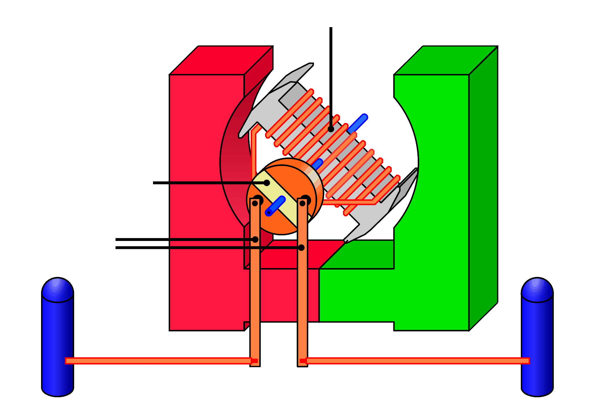

Klasse 9 Physik | 37 BE | ca. 20 Minuten
Ordne zu: Welche Beschreibung passt zu welchem Bauteil des Gleichstrommotors?

(A) (B) (C) (D) (E)Bild: LEIFIphysik (CC BY-NC 4.0)
Erkläre: Warum dreht sich die Rotorspule im Magnetfeld?
Bestimme: Ein Leiter (Querschnitt) wird von Strom durchflossen, der aus der Zeichenebene herauszeigt (⊙). Das Magnetfeld zeigt nach rechts. In welche Richtung wirkt die Lorentzkraft?
Erkläre: Was ist die Hauptaufgabe des Kommutators im Gleichstrommotor?
Entscheide: Wie kann man die Drehrichtung eines Gleichstrommotors ändern?
Begründe: Ein Schüler polt bei einem laufenden Motor gleichzeitig die Spannungsquelle um UND dreht die Magnete um (N und S vertauscht). Was passiert mit der Drehrichtung?
Nenne: Welche Energieumwandlung findet im Gleichstrommotor statt?
Erkläre: Wann wirkt die Lorentzkraft auf einen Leiter am stärksten?
Bestimme: Eine rechteckige Leiterschleife befindet sich im Magnetfeld zwischen Nord- und Südpol. Die Stromrichtung ist eingezeichnet. In welche Richtung dreht sich die Schleife?
Hinweis: Wende die Rechte-Hand-Regel auf beide Seiten der Schleife an. ⊙ = Strom zu dir, ⊗ = Strom von dir weg.